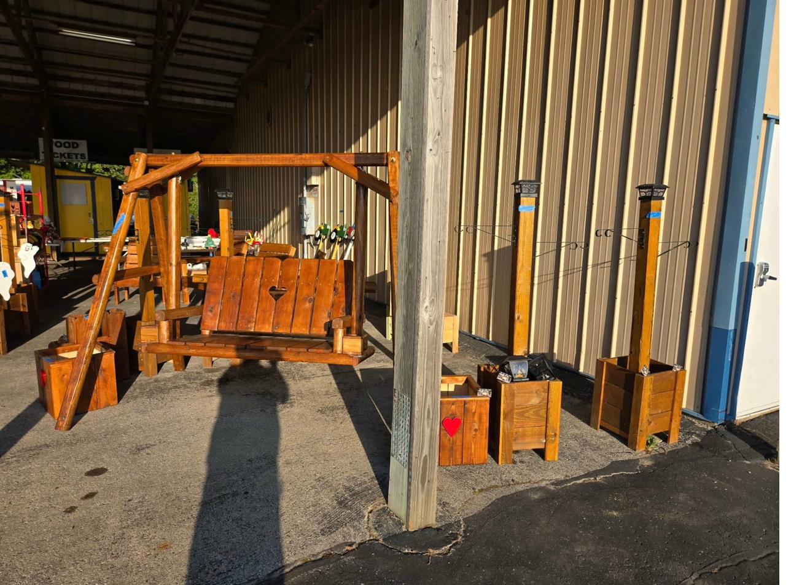

St. Francis may be one of the smaller communities along the Lake Michigan shoreline, but its residents take pride in their homes and outdoor spaces. The tree-lined streets and cozy neighborhood feel make St. Francis a place where a handcrafted piece of furniture on the porch or in the yard really stands out — in the best way.
We've built swings, decorative garden pieces, and custom projects for St. Francis homeowners who wanted something with character. In a community this close-knit, your neighbors notice when something is well-made. Our furniture is designed to draw compliments — because it looks good, feels sturdy, and clearly isn't from a big-box store.


St. Francis homeowners especially love our decorative pieces — Packers-themed wishing wells for the yard, heart-carved swings with matching planter boxes, and solar garden posts that add a warm glow in the evening. These are the kinds of handcrafted details that make a house feel like home.
What We Build for St. Francis Homes
Popular picks for St. Francis include A-frame swings with heart or custom cutouts and matching planter boxes, decorative wishing wells in natural stain or team colors like our Packers green and gold, compact patio sets for smaller yards, solar-topped garden posts, and custom projects tailored to your space. We deliver to St. Francis and all nearby communities.